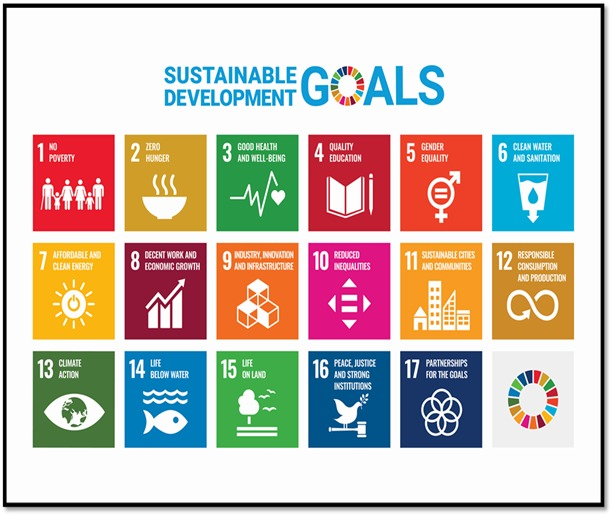

The Sustainable Development Goals are a set of 17 global targets created by the United Nations to address urgent social economic and environmental challenges around the world. Their purpose is to end poverty improve health and education reduce inequality promote economic growth and take action on climate change while protecting important natural resources like oceans and forests. These goals invite all countries both developed and developing to work together in a global partnership to create a better and more sustainable future for all.
